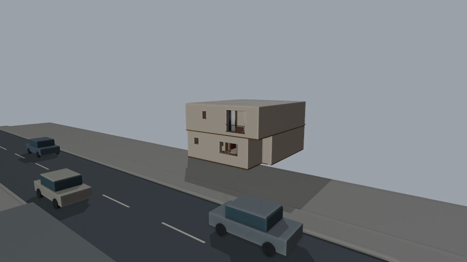
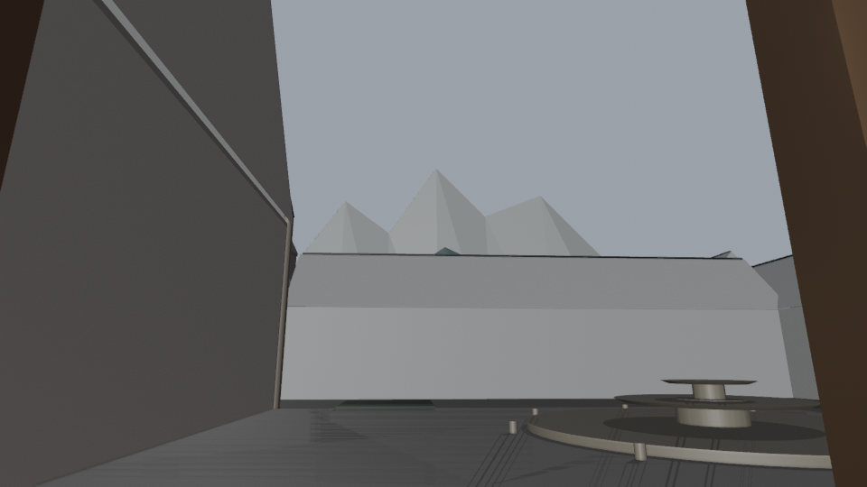
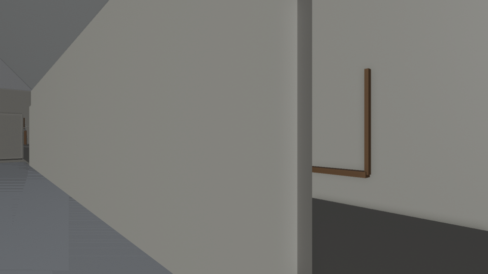
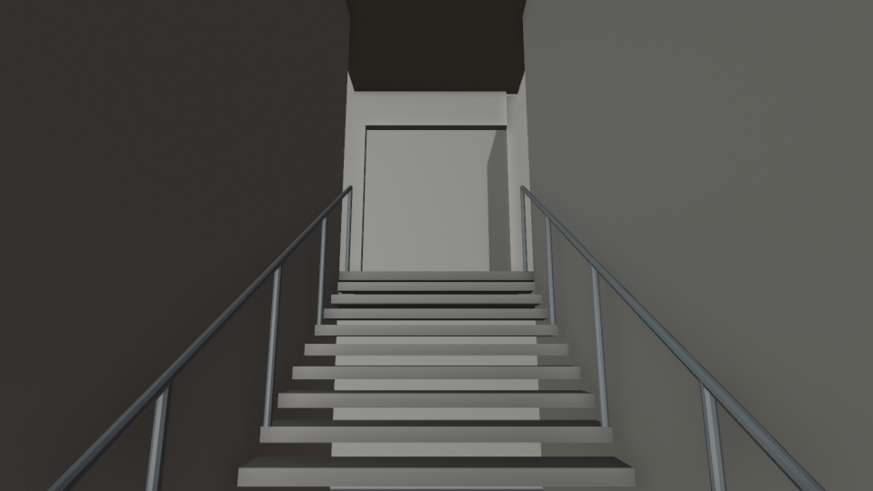

回模型檢視器
《現實遊戲》v2.3 模型候選
2026-10-22 · 五個候選模型 · 96 張固定鏡位檢查圖 · 15 段動線抽樣通過
候選背景幾何，尚未正式核定。原版五個模型保留。422 項尚未全數驗收；人物、持物動作、列車進站動畫及正式燈光未完成。山脊從 A 班外走廊東窗可見，原教室西窗仍被校舍遮擋。
開啟模型後可使用放置人偶、人偶視角及匯入 JSON。每組 C01～C08 請分開匯入；鏡位中的 feet 是還原相機用的虛擬錨點。
學院候選預設剖切至教室高度；要看完整山脊或外觀，請將剖切拉至關閉，或進入人偶視角。
本輪新增反向／側向檢查
街道反向檢查

走廊東窗山脊

告白轉角反打

告白樓梯
